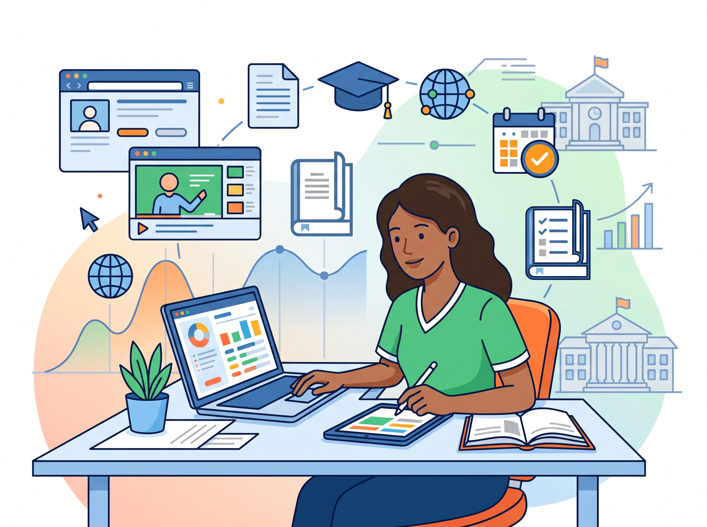
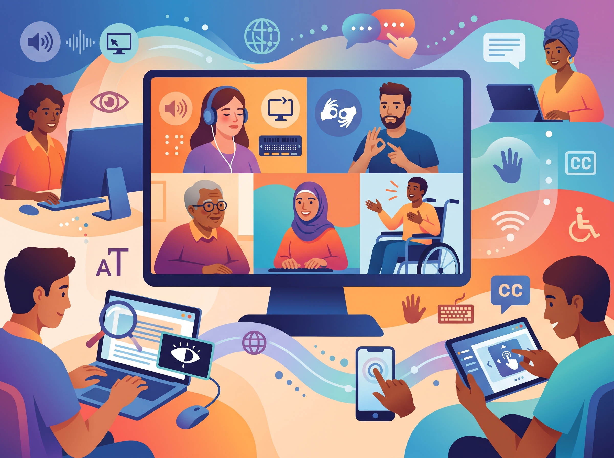

La Transformación de la Educación y los Servicios Públicos
El despliegue de las tecnologías web ha descentralizado el acceso al conocimiento. Con la llegada de las plataformas virtuales de aprendizaje y el gobierno electrónico, los ciudadanos ya no dependen exclusivamente de la presencia física para educarse o realizar trámites complejos (Torres, 2025). Esta evolución ha permitido el surgimiento de modalidades educativas abiertas y a distancia, democratizando oportunidades en regiones históricamente postergadas.
La interactividad en el lado del cliente y la capacidad de responder a las necesidades específicas de las personas (Nielsen, 2013) han provocado que las interfaces no solo se centren en entregar información, sino en facilitar la experiencia del usuario. Hoy en día, la educación en línea es un pilar social que sostiene el crecimiento profesional de millones de personas en todo el mundo.

Inclusión, Accesibilidad y Comunicación Global
La comunicación contemporánea está mediada por la web. Redes sociales, plataformas de colaboración y foros interactivos permiten que la información fluya sin fronteras. Sin embargo, este alcance masivo exige que los desarrolladores prioricen la accesibilidad web. Según la Iniciativa de Accesibilidad Web del W3C (WAI), la accesibilidad consiste en diseñar la web para que personas con cualquier tipo de limitación o discapacidad puedan percibir, entender, navegar e interactuar con ella (W3C, 2025).
Al incorporar buenas prácticas como el uso de textos alternativos en imágenes y una maquetación semántica robusta, disminuimos la brecha digital y garantizamos un acceso equitativo y en igualdad de condiciones para todos los usuarios.

Recurso Audiovisual: La Evolución de la Sociedad Digital
A continuación, se presenta un recurso educativo en video que explica el impacto de las tecnologías web en la sociedad actual:
Enlace directo al recurso: Ver video en YouTube.